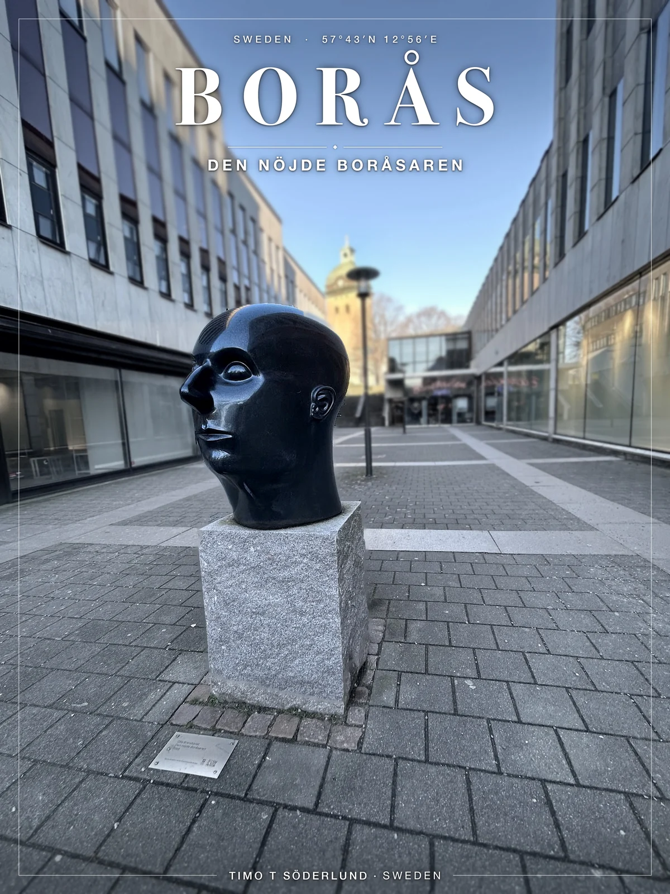

Den nöjde Boråsaren · Stora Torget
Black Diabase Sculpture by Olle Brandqvist (2008) · Torggatan / Stora Torget, Borås, Sweden
English
Carved from dense black diabase atop a rough-hewn granite pedestal, Den nöjde Boråsaren (2008) by Borås-born sculptor Olle Brandqvist stands along Torggatan by Stora Torget in central Borås, Sweden, gazing calmly out across the square. Cool morning sky reflections trace the silky polished stone in the foreground while the passage recedes behind the sculpture toward the sunlit bell tower and green copper dome of Caroli Church. Photographed by Timo T Söderlund for Borås Poster Project 2026.
Svenska
Huggen i mörk, polerad diabas på en grovhuggen granitsockel står den boråsfödde skulptören Olle Brandqvists verk Den nöjde Boråsaren (2008) vid Torggatan och Stora Torget i centrala Borås och blickar lugnt ut över torget. Svala morgonreflexer följer den silkeslena stenen i förgrunden medan gränden bakom skulpturen leder blicken in mot Caroli kyrkas morgonsolbelysta torn och gröna kopparkupol. Fotograferad av Timo T Söderlund för Borås Poster Project 2026.
Photographer & Edition: Timo T Söderlund · Borås, Sweden (2026)